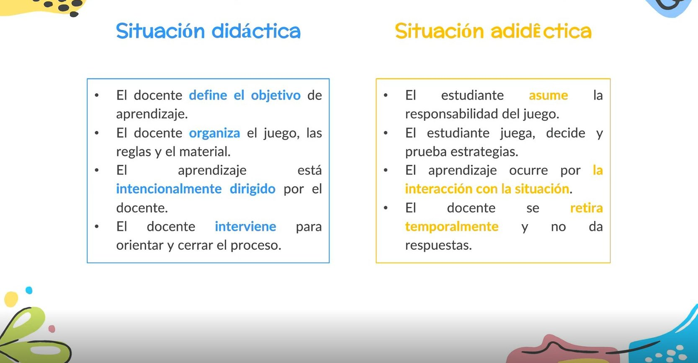
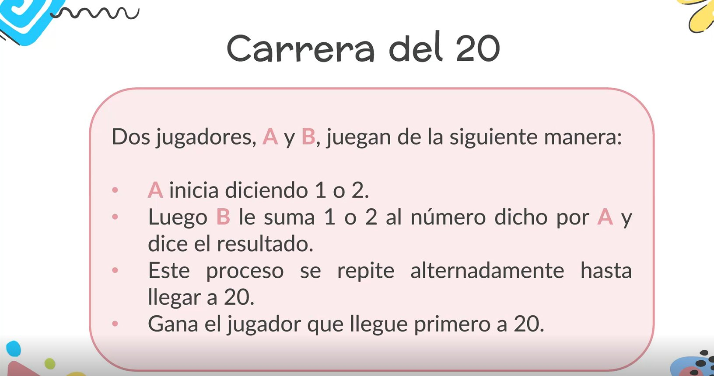

Teoría de situaciones didácticas
Situaciones didácticas y juegos
La teoría de las situaciones didácticas, propuesta por Guy Brousseau, explica cómo los estudiantes construyen conocimientos matemáticos al resolver problemas en situaciones organizadas por el docente.
La teoría
Aprender resolviendo problemas
La teoría de las situaciones didácticas, propuesta por Guy Brousseau, explica cómo los estudiantes construyen conocimientos matemáticos al resolver problemas en situaciones organizadas por el docente.
El maestro propone un reto y ofrece materiales, reglas y condiciones para que los estudiantes exploren, prueben estrategias, se equivoquen y expliquen sus respuestas, sin recibir la solución desde el inicio.
- 1El maestro propone un reto
- 2Ofrece materiales, reglas y condiciones
- 3Los estudiantes exploran, prueban estrategias, se equivocan y explican sus respuestas
Se distinguen cuatro momentos
Los cuatro momentos
Acción
El estudiante explora el problema y busca cómo resolverlo.
Formulación
Comunica las estrategias y respuestas que encontró.
Validación
Comprueba y argumenta si sus respuestas son correctas.
Institucionalización
El docente retoma lo descubierto, lo organiza y lo relaciona con el conocimiento matemático.
Ejemplos
Ejemplos de la exposición
Situación didáctica y situación adidáctica

Situación didáctica
- El docente define el objetivo de aprendizaje.
- El docente organiza el juego, las reglas y el material.
- El aprendizaje está intencionalmente dirigido por el docente.
- El docente interviene para orientar y cerrar el proceso.
Situación adidáctica
- El estudiante asume la responsabilidad del juego.
- El estudiante juega, decide y prueba estrategias.
- El aprendizaje ocurre por la interacción con la situación.
- El docente se retira temporalmente y no da respuestas.
Carrera del 20

Dos jugadores, A y B, juegan de la siguiente manera:
- A inicia diciendo 1 o 2.
- Luego B le suma 1 o 2 al número dicho por A y dice el resultado.
- Este proceso se repite alternadamente hasta llegar a 20.
- Gana el jugador que llegue primero a 20.
Juega la Carrera del 20
0
¿Seguimos jugando?
Hay actividades de matemáticas para cada edad.